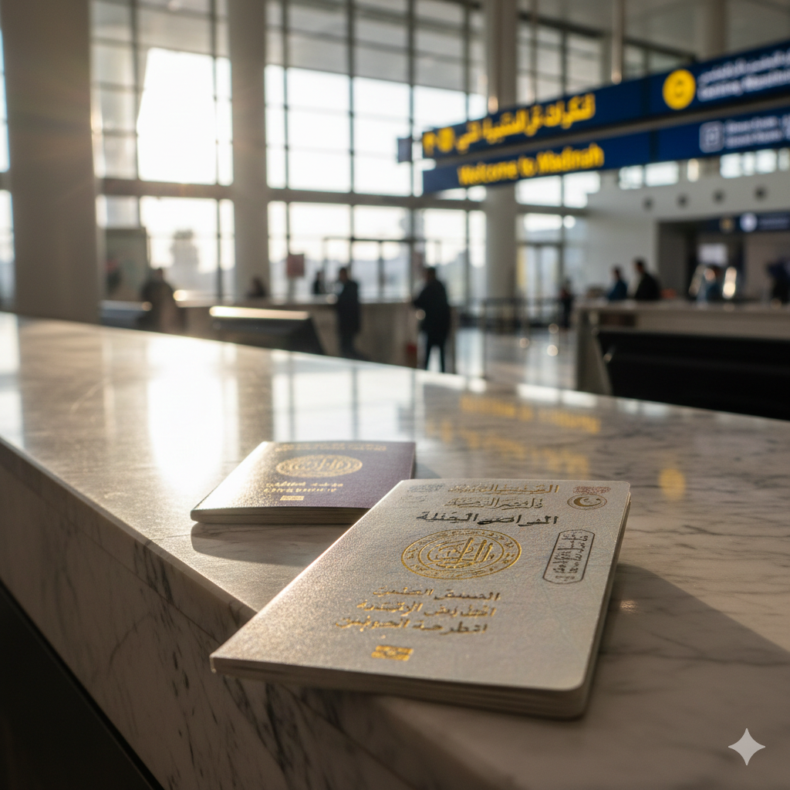
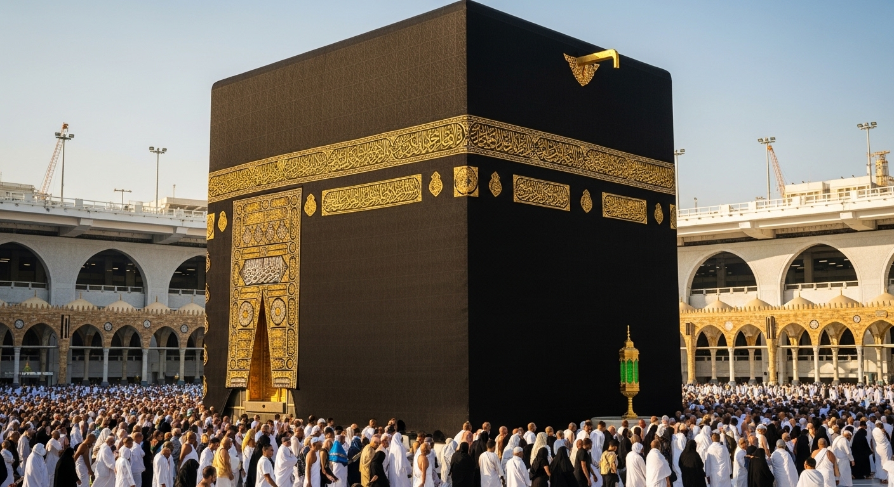
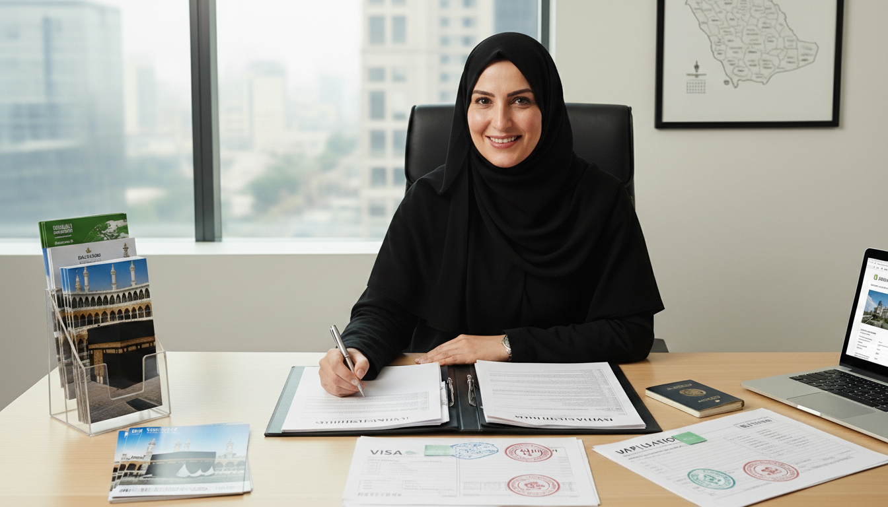
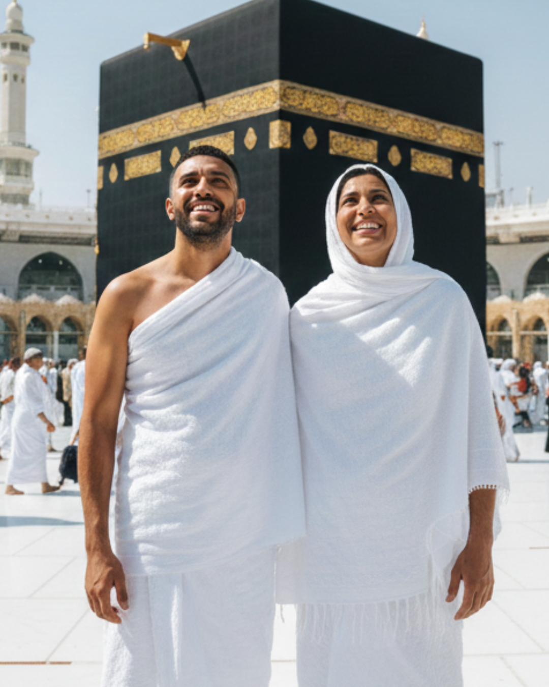
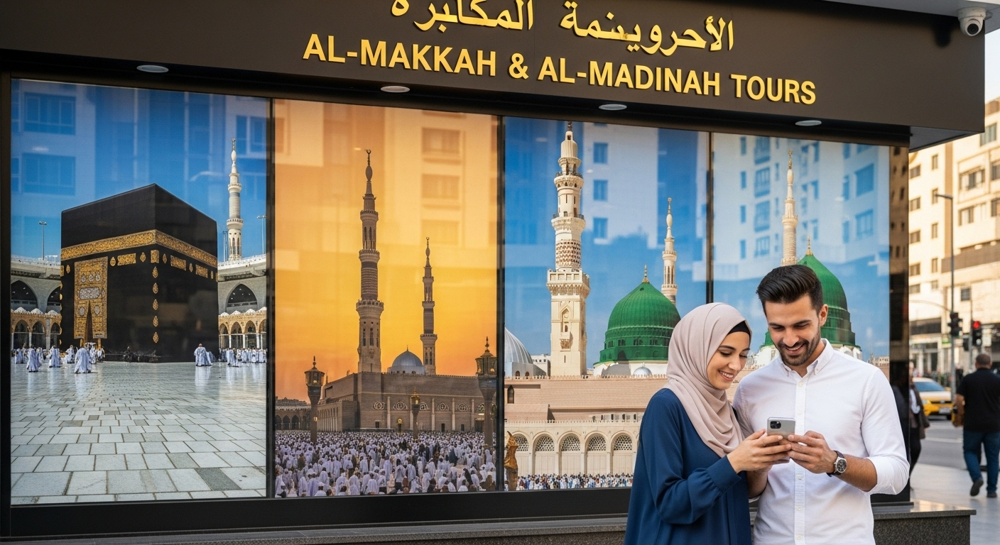
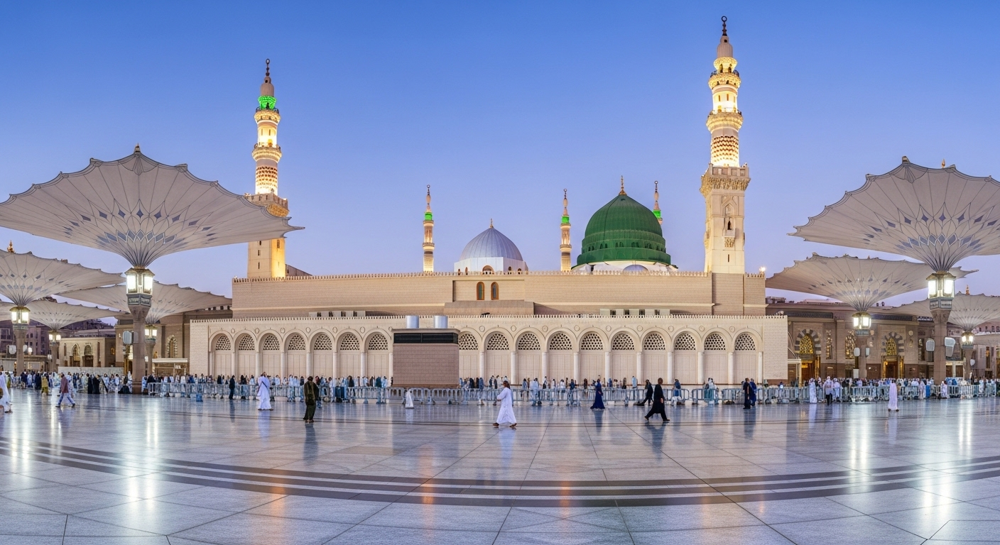

Visa Omra
Comment faire son visa Omra étape par étape
Le guide complet pour obtenir votre visa Omra : documents requis, étapes de la demande, délais et conseils pour éviter le refus.
Visa Omra, démarches administratives, checklist, conseils pratiques…
Je m'occupe de tout pour que vous partiez l'esprit libre.
Je travaille pour vous — pas pour une agence.
De l'obtention du visa à votre arrivée à La Mecque, je vous accompagne à chaque étape avec bienveillance et expertise.
15 min · Gratuit · Sans engagement
Vous avez des questions que vous n'osez pas poser à une agence ? Des préoccupations spécifiques en tant que femme ? Je suis là pour y répondre, avec bienveillance et sans jugement.
Depuis 2022, les nouvelles règles saoudiennes permettent aux femmes de faire l'Omra sans tuteur masculin. Je vous explique les conditions exactes, les groupes féminins agréés disponibles, et comment choisir le bon encadrement.
Voyager avec des enfants à La Mecque nécessite une préparation spécifique : documents, conditions d'âge, organisation sur place, hébergement adapté. Je vous guide étape par étape pour que ce voyage soit une bénédiction pour toute la famille.
Produits de beauté autorisés, règles de pureté rituelle, gestion du cycle menstruel à La Mecque… Des sujets délicats, abordés avec discrétion et clarté, entre femmes.
Les femmes vivent l'Omra différemment — émotionnellement, spirituellement. Je vous aide à vous préparer intérieurement pour que votre séjour aux Lieux Saints soit le plus enrichissant possible.
Chaque situation est unique. Lors de votre consultation gratuite, je réponds à toutes vos questions — même les plus délicates — avec bienveillance et sans jugement.
15 minutes offertes · Sans engagement · Par visio ou téléphone
Pour le Hajj, mon rôle est de vous orienter vers les meilleures agences françaises agréées, selon votre budget, vos exigences et la date souhaitée.
Le Hajj est l'un des moments les plus sacrés de la vie d'un musulman. Le choix de l'agence est crucial : qualité de l'hébergement, proximité de la Kaaba, encadrement religieux, rapport qualité-prix… Je connais les meilleures agences du marché et je vous aide à choisir sereinement.

Je vous aide à trouver le forfait qui correspond à votre situation, vos attentes et vos contraintes, sans compromis sur la qualité.
Je ne vends aucun forfait, aucun vol, aucun hôtel. Mon seul intérêt, c'est le vôtre. Un accompagnement humain, bienveillant et 100% personnalisé, par une sœur qui a elle-même vécu l'Omra.

J'ai accompli plusieurs Omra, et j'ai travaillé dans une agence de voyage spécialisée Omra et Hajj.
Et c'est là que j'ai vu la réalité… Des pèlerins stressés, pleins de questions, qui avaient besoin d'être rassurés. Mais en agence, on n'avait jamais le temps. On vendait des voyages, mais on n'accompagnait pas vraiment.
Ça m'a marquée.
Alors j'ai décidé de faire les choses différemment.
Aujourd'hui, je suis consultante indépendante, je travaille avec plusieurs agences agréées.
Mon rôle ? Être là pour vous. Vraiment.
Parce que l'Omra et le Hajj ne sont pas des voyages comme les autres.
Vous méritez un accompagnement à la hauteur de ce moment unique.
Je ne perçois aucune commission des agences. Mon conseil est 100% neutre — je travaille pour vous, pas pour une agence.
J'ai moi-même accompli plusieurs Omra et travaillé en agence spécialisée. Mon conseil est concret, vécu, authentique.
Disponible 5j/7 par email et WhatsApp. Vous n'êtes jamais seule face à vos questions ou imprévus de dernière minute.

Valise, documents, rites, douas… Tout ce qu'il faut emporter et préparer avant de partir, condensé dans une checklist claire et pratique.
Entrez vos coordonnées, je vous l'envoie directement par email.
Aucun spam. Désabonnement en 1 clic à tout moment.
Des guides complets pour préparer votre pèlerinage sereinement, étape par étape.

Le guide complet pour obtenir votre visa Omra : documents requis, étapes de la demande, délais et conseils pour éviter le refus.

Agréée, fiable, dans votre budget… Comment choisir une agence Hajj sérieuse parmi des centaines d'offres ? Tous les critères à vérifier avant de signer.

De la décision de partir à l'embarquement : checklist complète, préparation spirituelle, documents, valise et conseils pratiques pour une Omra réussie.

Visa, vol, hôtel, agence ou indépendante… Tous les postes de dépenses expliqués clairement pour planifier votre Omra sereinement et sans mauvaise surprise.
Réservez votre consultation gratuite de 15 minutes.
Ensemble, obtenons votre visa Omra rapidement et sereinement.
Ou envoyez-moi un email : consultanteomrahajj@gmail.com
Les réponses aux questions les plus posées par les pèlerins français.
La solution la plus simple est le visa touristique e-Visa pour l'Arabie Saoudite, qui autorise également la pratique de l'Omra. Il s'obtient en ligne, rapidement, avec un dossier bien constitué. Je vous accompagne dans toutes ces démarches pour maximiser vos chances d'acceptation rapide.
Les documents généralement requis sont : un passeport valide 6 mois après la date de retour, des photos d'identité récentes fond blanc, et une réservation vol + hôtel confirmée. Je vous fournis une liste personnalisée selon votre situation lors de notre consultation.
Avec un dossier bien constitué, le visa Omra est généralement obtenu en 3 à 7 jours ouvrés. Durant les périodes de forte demande (Ramadan, saison Hajj), ce délai peut s'allonger à 2-3 semaines. C'est pourquoi je recommande toujours d'anticiper ses démarches au minimum 6 semaines avant le départ souhaité. En cas d'urgence, certaines procédures accélérées existent.
Oui ! Vous pouvez faire votre Omra de manière indépendante sans passer par une agence de voyage. Je peux vous accompagner dans toutes vos démarches selon vos besoins :
Vous choisissez exactement ce dont vous avez besoin, je m'occupe du reste !
Le visa Omra est spécifiquement dédié au pèlerinage, lié à une agence agréée et généralement moins cher. Le visa touristique (e-Visa) permet également de faire l'Omra tout en visitant d'autres régions d'Arabie Saoudite. Il offre plus de flexibilité mais peut dans certains cas être plus long à obtenir. Le choix dépend de votre situation, votre budget et vos projets. Je vous aide à choisir le plus adapté.
Pour choisir une agence Hajj fiable : vérifiez qu'elle est sur la liste officielle des agences agréées par le Consulat d'Arabie Saoudite en France, consultez les avis clients vérifiés, comparez les prestations incluses (hébergement, transport, encadrement religieux), et méfiez-vous des prix anormalement bas. Je dispose d'une liste à jour des meilleures agences et je vous aide à comparer selon votre budget lors de notre consultation gratuite.
La première consultation de 15 minutes est entièrement gratuite et sans engagement. Lors de cette consultation, nous faisons ensemble le bilan de votre situation et définissons le niveau d'accompagnement dont vous avez besoin. Les tarifs pour l'accompagnement complet sont communiqués de façon transparente et varient selon la formule choisie. Contactez-moi pour en discuter.
Vous avez une autre question ? Posez-la ici, je vous réponds sous 48h.
Envoyez-moi un message ou réservez directement votre consultation gratuite.